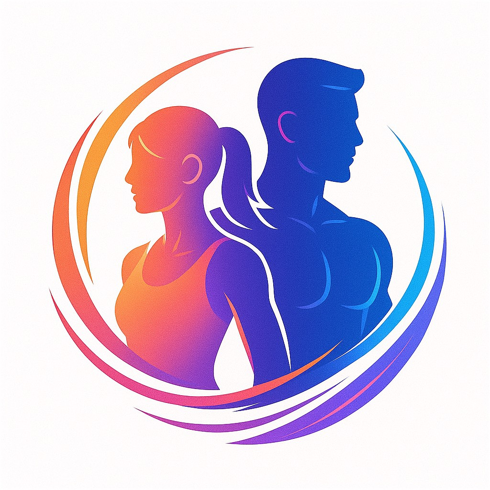

Mobile App / Personal Dev
FitGear
完全個人開発のトレーニング記録アプリ。
「継続できること」を最優先にUIを設計し、迷わず記録できる体験を実現。
カレンダー機能や部位ごとのボリューム管理など、トレーニーが必要な機能を網羅。
またトレーニー同士のマッチング機能や掲示板機能、コミカルな筋トレおみくじなどお用意してます。
- React Native
- TypeScript
- Supabase
- SQLite